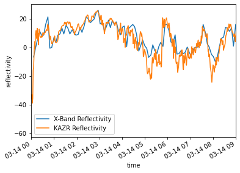
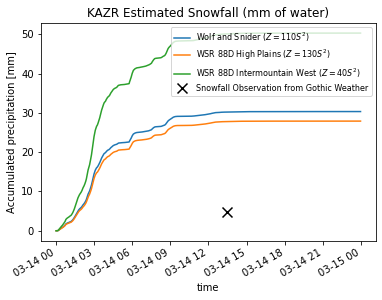

Check Reflectivity Calibration
Contents
Check Reflectivity Calibration#
In this example, we walk though how to check the calibration between the X-band and Ka-Band radars
Imports#
import pyart
import act
import glob
import matplotlib.pyplot as plt
import xarray as xr
from datetime import datetime
from matplotlib.dates import DateFormatter
Download the KAZR data#
We can access the Ka-band (KAZR) data from the ARM data portal
kazr_files = act.discovery.download_data("mgrover4",
"#############",
"guckazrcfrcorgeM1.c0",
"2022-03-14",
"2022-03-14")
[DOWNLOADING] guckazrcfrcorgeM1.c0.20220314.000001.nc
We have glued the original xband radar files, and stored these on the local file system in the path below
xprecip_files = sorted(glob.glob("/gpfs/wolf/atm124/proj-shared/sail/202203_glued/xprecipradar_guc_volume_20220314-03*"))
Load in the Data#
Let’s work with the xarray datasets!
kazr_radar = act.io.read_netcdf(kazr_files)
# this was output from the csu-xband-snowfall-march-14-2022 notebook
xband_ds = xr.open_dataset("sail_snowfall_retrievals_march_14_2022.nc")
We also need to apply the quality flags before working with the kazr data
kazr_lowest_reflectivity = kazr_radar.where(kazr_radar.qc_reflectivity != 1).isel(range=2)[['reflectivity']]
Setup Functions to Calculate Snowfall#
def snow_rate_from_ds(ds, swe_ratio, A, B, snow_field_name="snow_z", reflectivity_field='DBZ'):
"""
Snow rate applied to an Xarray.Dataset
Takes a given Snow Water Equivilent ratio (SWE_ratio), A and B value
for the Z-S relationship and creates a radar field similar to DBZ
showing the radar estimated snowfall rate in mm/hr. Then the given
SWE_ratio, A and B are stored in the radar metadata for later
reference.
"""
snow_z = ds[reflectivity_field].copy()
# Convert it from dB to linear units
z_lin = 10.0**(snow_z/10.)
# Apply the Z-S relation.
snow_z = swe_ratio * (z_lin/A)**(1./B)
ds[snow_field_name] = snow_z
field_attrs = {"units": "mm/hr",
"standard_name": "snowfall_rate",
"long_name":"snowfall_rate_from_z",
"valid_min":0,
"valid_max":500,
"swe_ratio":swe_ratio,
"A":A,
"B":B}
ds[snow_field_name].attrs = field_attrs
return ds
zs_relationship_dict = {"Wolf_and_Snider":
{"A": 110,
"B": 2},
"WSR_88D_High_Plains":
{"A": 130,
"B": 2},
"WSR_88D_Intermountain_West":
{"A": 40,
"B": 2},
"Matrosov et al.(2009) Braham(1990) 1":
{"A": 67,
"B": 1.28},
"Matrosov et al.(2009) Braham(1990) 2":
{"A": 114,
"B": 1.39},
"Matrosov et al.(2009) Braham(1990) 3":
{"A": 136,
"B": 1.3},
"Matrosov et al.(2009) Braham(1990) 4":
{"A": 28,
"B": 1.44,},
"Matrosov et al.(2009) Braham(1990) 5":
{"A": 36,
"B": 1.56},
"Matrosov et al.(2009) Braham(1990) 6":
{"A": 48,
"B": 1.45},
}
Apply the Z(S) relationships#
We can now apply our z-s relationships to our dataset
for relationship in zs_relationship_dict.keys():
snow_rate_from_ds(kazr_lowest_reflectivity,
8.5,
zs_relationship_dict[relationship]["A"],
zs_relationship_dict[relationship]["B"],
snow_field_name=relationship,
reflectivity_field='reflectivity')
ds = kazr_lowest_reflectivity
Calculate Accumulated Snowfall#
zs_fields = list(zs_relationship_dict.keys())
ds_resampled = ds.resample(time="1T").mean()
for field in zs_fields:
ds_resampled[field].attrs["units"] = "mm/hr"
ds_resampled = act.utils.accumulate_precip(ds_resampled, field)
Plot a Reflectivity Comparison#
xband_ref = xband_ds.sel(site='pluvio').isel(height=0).DBZ.resample(time='1T').mean().dropna('time')
kaband_ref = ds_resampled.reflectivity
difference = (kaband_ref - xband_ref)
Plot Both Reflectivity Values#
xband_ref.plot(label='X-Band Reflectivity')
kaband_ref.plot(label='KAZR Reflectivity')
plt.legend()
plt.title('')
plt.xlim('2022-03-14T00', '2022-03-14T09')
plt.savefig("kazr_xband_ref.png", dpi=300)

Plot the Difference in Reflectivity#
difference.plot()
plt.title('KAZR - X-Band Reflectivity')
plt.ylabel('Reflectivity (dB)')
plt.xlim('2022-03-14T00', '2022-03-14T09')
plt.ylim(-20, 20)
(-20.0, 20.0)
Compare Snowfall Totals with Gothic Weather Station#
The observation here is from the Gothic wx site, using the liquid precipitation value from March 14, 2022 https://www.gothicwx.org/current-year-data-2022.html
date_form = DateFormatter("%H%M UTC %b %d %Y")
for relationship in list(zs_relationship_dict.keys())[:3]:
relationship_name = relationship.replace("_", " ")
a_coefficeint = ds[relationship].A
b_coefficeint = ds[relationship].B
relationship_equation = f"$Z = {a_coefficeint}S^{b_coefficeint}$"
(ds_resampled[relationship+"_accumulated"]).plot(label=f'{relationship_name} ({relationship_equation})')
ax.xaxis.set_major_formatter(date_form)
plt.scatter(datetime(2022, 3, 14, 13, 30),
4.826,
c="k",
s=100,
marker="x",
label="Snowfall Observation from Gothic Weather")
plt.legend(loc='upper right', fontsize=8)
plt.title("KAZR Estimated Snowfall (mm of water)")
plt.savefig("kazr_snowfall.png", dpi=300)
